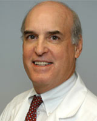
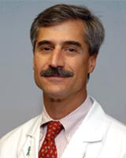
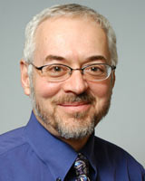
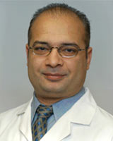
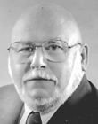
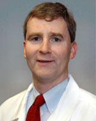

Urology Physicians and Staff
|
Elise De, MD |
|  |
Hugh A.G. Fisher, MD, FACS |
|  |
Ronald P. Kaufman, Jr., MD, FACS |
|  |
Barry A. Kogan, MD, FAAP, FACS |
|  |
Badar M. Mian, MD, FACS |
|  |
Donald Rivard, MD, FACS |
|  |
Mark D. White, MD, FACS |
|
Carl Diaz-Parker, RPA-C |
|
Mark P. Dentinger, MD |
|
Karla Giramonti, RN, MS, FNP |